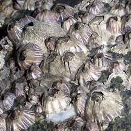
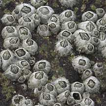
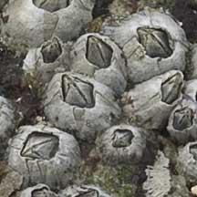
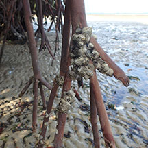
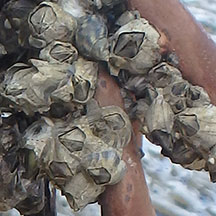

|
|
| barnacles text index | photo index |
| Phylum Arthropoda > Subphylum Crustacea > Class Cirripedia |
| Acorn
barnacle Balanus sp.* Family Balanidae updated Mar 2020 Where seen? This small rather pointy barnacle is commonly seen on many of our rocky shores and other hard surfaces in the sea such as jetty pilings, sea walls. Usually, many are crowded together in lower portions and shaded crevices where it is wetter. Unlike the hardier star barnacles (Euraphia sp.) which are found higher up where it is drier. Features: To about 1 cm across, conical outer shell made up of several wall plates. |
|
 Tuas, May 05  Acorn barnacles on a seawall. |
 Chek Jawa, Jan 05  On a rock |
 Chek Jawa, Jan 16  On mangrove roots. |
| Many settle on walls and hard surfaces.
Some species of acorn barnacles settle on living roots of mangrove trees. Others on living animals such as crabs. Some may also settle on living snails such as the Olive whelk. One snail may have more than one of these barnacles on its shell, which are quite large compared to the shell! |
 Changi, Aug 05  Acorn barnacles on a living snail. |

*Species are difficult to positively identify without examination of internal parts.
On this website, they are grouped by external features for convenience of display.
| Acorn barnacles on Singapore shores |
On wildsingapore
flickr
|
| Other sightings on Singapore shores |
Links
|